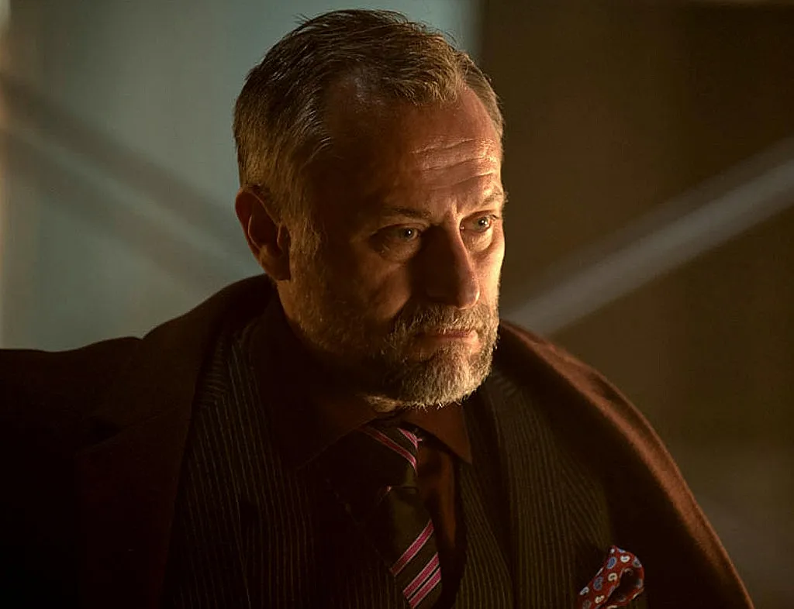
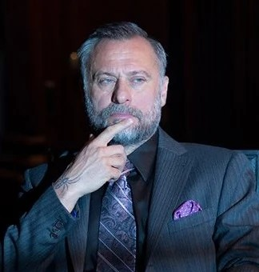

Viggo Tarasov
"John is a man of focus, commitment, sheer will... something you know very little about."
“존은 집중력, 헌신, 순전한 의지의 사나이야… 너처럼 그런 걸 전혀 모르는 놈과는 다르지.”

Viggo Tarasov
성별: 남자
국적: 러시아
직업: 타라소프트 폭도, 범죄 조직의 수장
소속: 타라소프 폭도
관계: 이오세프 타라소프(아들), 아브람 타라소프(형제)
상태: 죽음
알려진 문신: 오른쪽 손목에 거미 문신, 왼소에 불새 문신, 가슴에 러시아어 텍스트